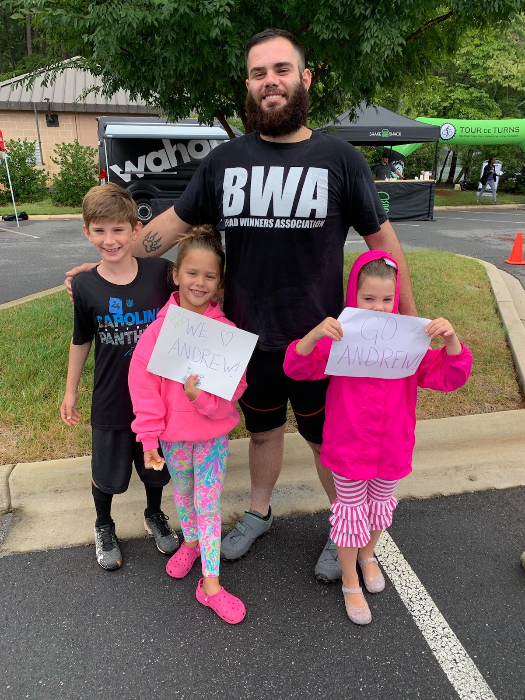

Introduction

"tour De turns" with my nephew and two nieces its a reputable charity event based here in Charlotte that i ride a road bike in annually.
Personal background:i was born in Greensboro, north Carolina but moved back in forth from north Carolina to cocoa beach, Flordia till i was twelve then eventually made my what was thought to be my final migration to cocoa beach, Flordia. i went to cocoa beach high school i played football for the minute men for a brief while then i quit school in 10th grade and pursed a career doing site development till i was 21 then i was incarcerated for three and half years (2015-late 2018) and it was not fun at all. because of that i do enjoy things alot more and can feel the turning of the days. when i was released from prison i moved to Charlotte were my family resides which mean the world to me i started working on my G.E.D and obtained that and now i am in collage.
professional background:I am currently a trades men doing H.V.A.C which i enjoy it is a labor trade but it requires knowledge as well. i say it all the time "its just like working on cars but in 130 degree attics". i also own a fairly successful lawn maintenance business which is something else i enjoy its a bit of a brain child of sorts it is what you make it.
Academic background:G.E.D
Primary computer platform:Dell Intel inside core-13
Courses im taking & why:
- CTI_110_50 for the knowledge (second time taking,the programing part is super hard during a epidemic.)
- CTS115_50 for the knowledge.
- WEB110_85 for the knowledge.course contract
- music appreciation because all the other choices were gone when i went to register for classes.
Something to remeber me by:Iv never felt held back from being what i want to be.
id also like to share:i like road bikes and hikeing. Im totally in the closest bought once being incarcerated. i enjoy feeding the homeless. my family for real means the world.i surfed a hurricane.both my feet are tattooed lol